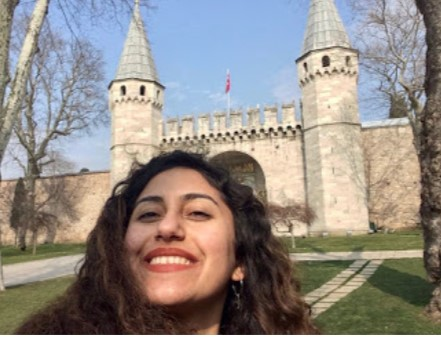

GEZİLERİM
İSTANBUL-TOPKAPI SARAYI

Topkapı Sarayı, saray halkının Dolmabahçe Sarayı, Yıldız Sarayı ve diğer saraylarda yaşamaya başlaması ile birlikte boşaltılmıştır. Padişahlar tarafından terk edildikten sonra da içinde birçok görevlinin yaşadığı Topkapı Sarayı hiçbir zaman önemini kaybetmemiştir. Saray zaman zaman onarılmıştır. Ramazan ayı içerisinde padişah ve ailesi tarafından ziyaret edilen Kutsal Emanetler Dairesi’nin her yıl bakımının yapılmasına ayrı bir önem verilmiştir. Fatih Sultan Mehmed 1465 yılında Topkapı Sarayı'nın inşaatını başlatmıştır. Topkapı Sarayı’nın ilk defa, adeta bir müze gibi ziyarete açılması Abdülmecit dönemine rastlamıştır. O dönemin İngiliz elçisine Topkapı Sarayı Hazinesi’ndeki eşyalar gösterilmiştir. Bundan sonra Topkapı Sarayı Hazinesi’ndeki eski eserleri yabancılara göstermek gelenek haline gelir ve Abdülaziz zamanında, ampir üslupta camekanlı vitrinler yaptırılır, hazinedeki eski eserler bu vitrinler içinde yabancılara gösterilmeye başlanır.
İSTANBUL-AYASOFYA CAMİİ
Ayasofya (Modern Yunanca: Aγία Σοφία Agía Sofía, tam adı: Ναός τῆς Ἁγίας τοῦ Θεοῦ Σοφίας Azize Sofya Kilisesi, Latince: Sancta Sophia ya da Sancta Sapientia), İstanbul'da tarihî bir müze. Bizans İmparatoru I. Justinianus tarafından, 532-537 yılları arasında İstanbul'un tarihî yarımadasındaki eski şehir merkezine inşa ettirilmiş bazilika planlı bir patrik katedrali olup 1453 yılında İstanbul'un Osmanlılar tarafından alınmasından sonra Fatih Sultan Mehmet tarafından camiye dönüştürülmüştür. 1935 yılından beriyse müze olarak hizmet vermektedir.
MISIR ÇARŞISI
Mısır Çarşısı, Eminönü`nde Yeni Camii`nin arkasında ve Çiçek Pazarı`nın yanındadır. İstanbul`un en eski kapalı çarşılarından olan Mısır Çarşısı, aslında Yeni Cami’nin yapılışı sırasında bu camiye gelir getirmek amacıyla inşa ettirilmiştir. Sultan III. Murat’ın annesi olan Safiye Sultan tarafından 10 Muharrem 1006 (1597) tarihinde başlatılan inşaat uzun bir duraklamadan sonra Sultan IV. Mehmet’in annesi Hatice Turhan Sultan tarafından tamamlattırılmıştır. Mimarları Davut Ağa ve Mustafa Ağa’dır.
KIZ KULESİ
Kız Kulesi, hakkında çeşitli rivayetler anlatılan, efsanelere konu olan, İstanbul Boğazı'nın Marmara Denizi'ne yakın kısmında, Salacak açıklarında yer alan küçük adacık üzerinde inşa edilmiş yapıdır. Üsküdar'ın sembolü haline gelen kule, Üsküdar’da Bizans devrinden kalan tek eserdir.